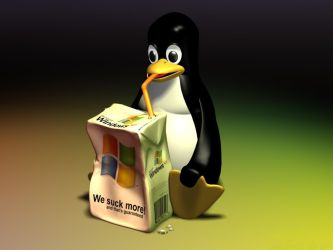

Studies

- MS Computer Science
-
- Data Mining
- Online network analysis
- Machine Learning
- Natural language processing
- Engineering electronics
- Computer Networks
- Advanced Computer Security
- Theory of computation
- Advance designed and analysis of algorithms
- Parallel and Distributed Processing
- BS in Computer Engineering
-
- Circuit analysis I
- Circuit analysis II
- Digital systems series
- Electrodynamics
- Engineering electronics
- Digital Systems
- Digital Computers and Computing
- Microcomputers and Embedded Computing Systems
- Computer Organization and Design
- VLSI Design
- Object-Oriented Programming I, II
- Data Structures and Algorithms
- Systems Programming
- Database Organization
- Introduction to Algorithms
- Operating Systems
Other Interests
- GNU-Linux
Since I started using GNU-Linux in my personal computer, I fell in love with both the challenge of getting things to work and the power that users of UNIX get out of their versatile machines. I almost use Debian for all my personal computing adventures. Although I do have plenty of experience using windows environments (and Visual Basic) during all my years working in the mines.
- Course: System Programming
- Course: Operating Systems
- Experience: Just using it everyday
- Social Sciences
I love social sciences as they provide us many different tools to measure the world around us and react accordingly. I study business administration at a technical high school back in Chile and I have taken some related classes in IIT. However, my interest for social sciences in general is way greater than a classroom experience.
- Course: Introduction to Economics
- Course: Regional Economical Development
- Course: Social Inequality
- Mathematics
I love math almost more than any other subject. I almost study math as a major, but I realize that programming was a more pragmatic choice that is not far remove from this beautiful subject.
- Course: Differential Calculus
- Course: Integral Calculus
- Course: Differential Equations
- Course: Multivariate Calculus
- Course: Discrete Mathematics
- Course: Probability and Statistics for Engineers
- Course: Matrix Algebra and Complex Variables
Natural and Applied Sciences
I always try to choose a subject because of the learning and the challenge they provide. For this reason I took the hardest electives when possible such as electrodynamics, thermodynamics, and material science instead of easier courses that would not give me the satisfaction of getting some insights out of nature.
- Course: Material Science
- Course: General Chemistry
- Course: Thermodynamics
- Course: Mechanics
- Course: Electricity and Magnetism
- Course: Modern Physics
- Course: Electrodynamics
- General Culture
Learning about diverse cultures all over the world and their history is something that I feel passionate about. I love reading books or listening to podcast and audio books of almost any topic. I listened to the entire history of Rome podcast, hardcore history, history on fire, etc. Also, my dream is to learn at least the five widely spoken languages in the world. At the moment I am working in Chinese but is seems like is going to take a while. I have been to China and Indonesia to learn about their culture.
- Course: Introduction to Chinese Language (in China)
- Course: Intensive Chinese Language Program (In China)
- Course: Chinese Culture (In China)
- Language: Native In Spanish